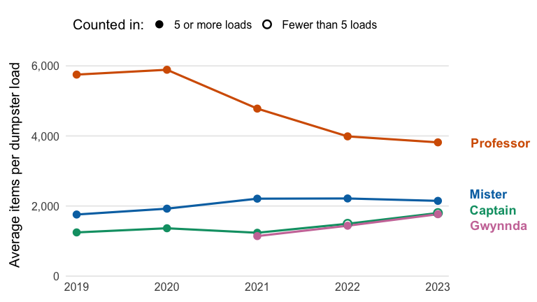

trashwheels helps Healthy Harbor volunteers and community educators answer one question:
Which kinds of rubbish does each of Baltimore’s Trash Wheels collect most, and is it going up or down over time?
It contains cleaned data on every dumpster load the Trash Wheels collected from 2014 to 2023, two functions to summarise and plot it, and a Shiny app for exploring it.
Documentation website: https://etc5523-2026.github.io/etc5523-assignment-4-prat0012-ai/
What is in the package
| Part | What it does |
|---|---|
trash_loads |
The data: estimated counts of seven kinds of rubbish in each of 993 dumpster loads from the four Trash Wheels. |
summarise_rubbish() |
Summarises one kind of rubbish by Trash Wheel and year, including the average per dumpster load. |
plot_rubbish() |
Draws one line per Trash Wheel from that summary. |
run_app() |
Opens the Trash Wheel rubbish explorer app. |
The data
The data come from Mr. Trash Wheel, part of Baltimore’s Healthy Harbor initiative, and were shared through TidyTuesday on 5 March 2024. They cover 993 dumpster loads from four Trash Wheels (Mister, Professor, Captain and Gwynnda) between May 2014 and December 2023. Each row of trash_loads is one kind of rubbish in one dumpster load.
The script data-raw/trash_loads.R downloads the raw file and prepares it. It fixes dates written in two formats, takes the year from the date where the raw year column was wrong, and keeps blank counts as blank, because a blank means the item was not counted, not that none were found.
Counts are estimates made from samples of each dumpster.
Installation
Install the package from GitHub:
# install.packages("remotes")
remotes::install_github("ETC5523-2026/etc5523-assignment-4-prat0012-ai")Launch the app
The app opens in your web browser. Choose a kind of rubbish, the Trash Wheels to compare, a range of years, and whether to show the average per dumpster load or the yearly total. The headline, chart and table update together, and a “Read with care” box flags weak evidence, such as years where few loads were counted.
A quick example
library(trashwheels)
bottles <- summarise_rubbish(
trash_loads,
item = "Plastic bottles",
years = c(2019, 2023)
)
plot_rubbish(bottles, measure = "per_load")
Professor Trash Wheel collects the most plastic bottles in each dumpster load, but its average fell from about 5,750 in 2019 to about 3,800 in 2023.
Generative AI declaration
I used Claude (Anthropic) to help plan the package structure and choose a dataset, to draft and debug R code for the data-raw script, the two functions, the Shiny app and its CSS, to draft the roxygen2 documentation, this README and the vignette, and to diagnose a Shiny plot-size error. I checked, ran and revised all generated code and text, and I am responsible for the final submission.